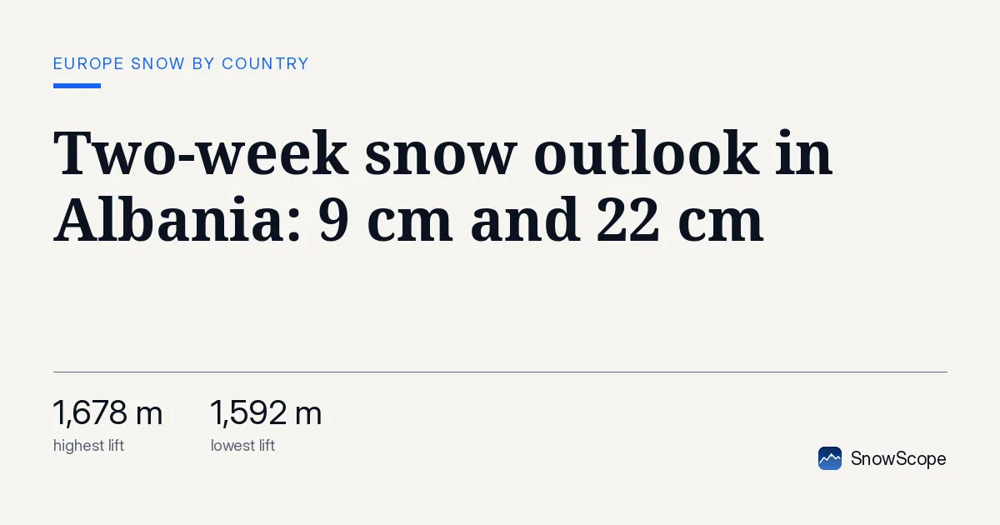
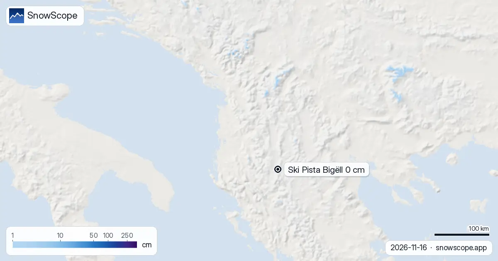

Albania's two-week forecast: 9 cm rising to 22 cm
Albania's mountains will see snow accelerate over the next two weeks. The first week brings 9 cm; the second week doubles that to 22 cm, though early-season forecasts carry more uncertainty than winter ones.
See the live snow forecast for Ski Pista Bigëll in the SnowScope appSnow depth, powder alerts and the 3D map, free.
The outlook
The contrast is stark. In the first week—November 20 to 23—our model expects 9 cm of fresh snow on Albanian mountains. It is modest, mostly landing above 2100 m elevation, and arrives in a single cold pulse. Then the pattern shifts. Week two, November 24 to 30, shows 22 cm—more than double. That second week is when the season gains traction.
The single snowiest day looks like Sunday, November 23, with 9 cm. The jump between weeks reflects a change in the weather system: week one is a brief push; week two is a more sustained pattern. The model shows reasonable confidence in this second-week surge, though early November forecasts can still shift, so we keep expectations realistic.
| Resort | Snow depth | New snow, 72 h | Coming, next days | Top |
|---|---|---|---|---|
| Ski Pista Bigëll | 0 cm | 0 cm | 0 cm | 1,678 m |

Next three days
If you are watching the forecast closely, patience is required. The next three days (through November 19) bring almost no fresh snow. Snow does not really start until November 20—four days from now.
When it arrives, the snow line will be around 2100 m, so lower slopes stay dry. Watch November 20 as the entry point for the first system; activity continues through November 23, then quietens before the second wave takes over around November 24.
Trend
Snow cover across Albania is growing fast. Seven days ago, only 40 km² were white; yesterday, that reached 60 km²; today it is 140 km². That is a 3.5-fold jump in a week. Most of this growth is happening in the high mountains, above 2000 m, especially in the Albanian Alps—the standout area, which picked up 49 cm in just the past 72 hours.
Mount Korab also shows 21 cm in that period. The white share of the country is still only 1%, but the upward trajectory is unmistakable. We are starting from almost bare ground, so each system adds visible impact.
Where to find it
Right now, snow is concentrated in the high mountains. The Albanian Alps are leading, followed by Mount Korab. These areas received heavy snow in the past three days, while lower slopes remain mostly bare.
The lowland ski area, Ski Pista Bigëll at 1678 m elevation, is still at zero depth and will likely stay that way until the second week, when snow reaches lower elevations more reliably.
By height
Altitude controls everything right now. Below 1500 m: no snow. Between 1500 and 2000 m: barely a trace, with only 1% coverage and nearly zero depth. Above 2000 m: snow starts to exist. In the 2000 to 2500 m band, 52% of the terrain holds an average of 2 cm.
The snow line sits at 2100 m today. As the second week unfolds and more systems move through, this pattern will shift downward, but until November 24, high-altitude terrain is where the action is.
Tips for skiers
- For the next four days, there is almost nothing to chase at lower elevations. Watch from November 20 onwards when the first system arrives.
- The Albanian Alps and Mount Korab are your snow leaders and should capture the most accumulation in both weeks. Aim high if you are planning a trip.
- Until November 24, the snow line sits around 2100 m. Any runs you have above that elevation are your best bet.
- Early November snow tends to be thin and can hide rocks underneath. Always check the official avalanche bulletin before skiing off-piste in the high mountains.
- By November 24 to 30, the second wave should bring more substantial cover to higher terrain, with up to 22 cm forecast across the mountains.
About these numbers
Resort snow depths are the deepest snow on the resort's upper slopes from the SnowScope snow model (about 1 km, run of 16 November); they are estimates for an area, not a measurement at one point. Station values are measurements on the date shown. Forecasts can change. Always read the official avalanche bulletin before going off-piste.
Cite this report
For research, teaching or the press: the numbers and charts are free to reuse under CC BY 4.0 with this citation.
SnowScope (2026), Albania's two-week forecast: 9 cm rising to 22 cm, https://snowscope.app/blog/en/2026/11/albania-snow-report-16-november-2026.html, accessed 2026-11-16
SnowScope (Atlas Labs). (2026, November 16). Albania's two-week forecast: 9 cm rising to 22 cm. SnowScope snow reports. https://snowscope.app/blog/en/2026/11/albania-snow-report-16-november-2026.html
BibTeX
@misc{snowscope2026albaniasnowreport16novem,
author = {{SnowScope (Atlas Labs)}},
title = {Albania's two-week forecast: 9 cm rising to 22 cm},
year = {2026},
month = nov,
howpublished = {\url{https://snowscope.app/blog/en/2026/11/albania-snow-report-16-november-2026.html}},
note = {Published 2026-11-16 20:42 UTC; accessed 2026-11-16}
}· CC BY 4.0 · Methods, data and tools →
Ski Pista Bigëll: snow and temperature by height, this winter vs last (tools) →
Follow Ski Pista Bigëll
Free: a message when fresh snow is coming, and the forecast every morning.
More snow reports

A cheap 3-day Lake Como plan for December with real 2026-27 prices: trains, ferries, a funicular and a ski day at Piani di Bobbio or Madesimo, what you save compared with Cortina, and the chance of snow at Christmas.

A storm on November 4 left 8 to 13 inches of new snow at five high Colorado stations near Aspen. Five days later, half of it was gone. What that means for powder days.

Himalaya snow cover in November 2026 from NASA MODIS: snow on 610,409 km² of ground above 2,000 m between the Hindu Kush and Bhutan, half the clear ground white from about 4,800 m in Nepal and 3,600 m in the Karakoram. The NDSI explained, plus shadows, cloud and the low autumn sun.